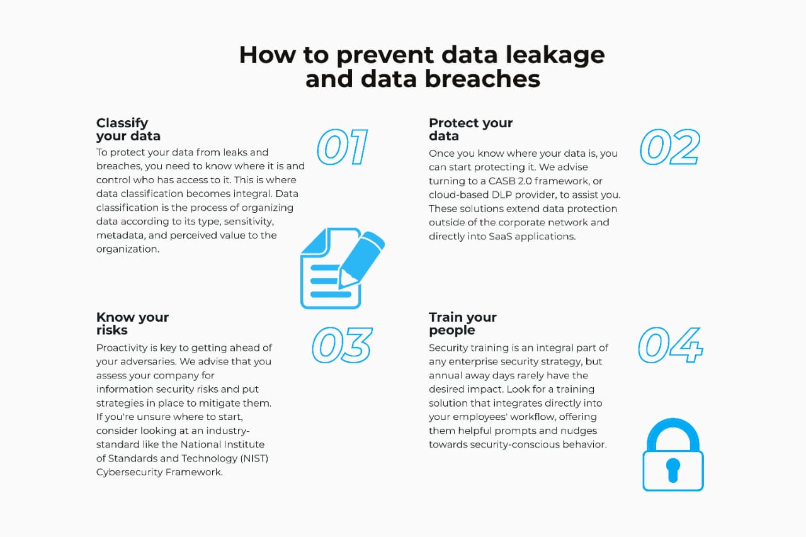

What is Data Breache & How it is done?
A data breach is an unauthorized access to sensitive information, typically stored in a database or a computer system. This can occur due to various reasons, including hacking, malware, misconfigured systems, or human error. In such an attack, attackers can steal, modify, or delete sensitive information such as personal identification data, financial information, and confidential business information. This can lead to identity theft, financial losses, reputational damage, and loss of consumer trust. It is important for organizations to implement strong security measures, regularly monitor their systems, and have a response plan in place to quickly detect and contain any breaches.
Process :
The process of a data breach attack can typically be divided into the following five steps:
1.Reconnaissance: The attacker gathers information about the target organization, its systems, and the data they contain. This can be done using various methods, such as social engineering, network scanning, and open source intelligence.
2.Exploitation:> The attacker uses the information gathered in the reconnaissance phase to find and exploit a vulnerability in the target system. This could be a software vulnerability, misconfigured system settings, or weak passwords.
3.Gaining Access:> Once the attacker has successfully exploited a vulnerability, they can gain access to the target system and its data. This access could be limited or complete, depending on the vulnerability and the attacker's goals.
4.Data Exfiltration: The attacker then copies or steals the sensitive data from the target system. This could be done by downloading the data to a remote location, such as a server controlled by the attacker, or by copying it to a removable storage device.
5.Covering Tracks:> The attacker tries to hide their tracks to prevent detection and maintain access to the target system. This could involve deleting logs or using encryption to hide their activities.
It's important to note that the above steps are not always linear and may overlap or occur in a different order. Also, some data breach attacks may not include all the above steps.
Awareness on Data Breaches for Post-production
- Data Encryption
- Access controls
- Regular Software updates
- Employee training
- Regular backups
- Network security
Case Study :-
Company: Sony Pictures Entertainment
Incident: In November 2014, Sony Pictures Entertainment suffered a major data breach that resulted in the compromise of sensitive information, including employee and executive emails, financial data, and confidential information about upcoming films. The attackers, believed to be a North Korean hacking group, also released several unreleased Sony films online.
Impact: The breach had a significant impact on Sony Pictures Entertainment, with the company facing criticism for its lack of security measures and the sensitive information that was leaked. The release of unreleased films also resulted in significant financial losses for the company.
Cause: The breach was caused by a vulnerability in the company's network security systems, with the attackers able to gain access to the company's servers through a weakly secured system.
Response: Sony Pictures Entertainment responded to the breach by launching a comprehensive investigation, improving its security measures, and cooperating with law enforcement. The company also offered identity theft protection services to affected employees.
Lessons learned: The Sony Pictures Entertainment breach highlights the importance of implementing strong security measures to prevent data breaches and the need for companies to be prepared to respond quickly and effectively in the event of a breach. The breach also highlights the potential impact of data breaches on a company's reputation and the need for companies to take steps to protect sensitive information.